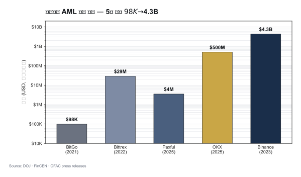

TL;DR
- 가상자산 AML enforcement 시대 본격 도래 (2020~)
- Binance $4.3B (2023) — 사상 최대, AML + 제재 결합
- OKX $500M+ (2025) — KYC 약함, 의심거래 처리 미흡
- Paxful $3.5M FinCEN (2025) — $500M 불법자금 처리
- 트렌드: CCO·CEO 개인 책임 + 규모 거대화 + 제재 위반 결합
- 한국 enforcement는 아직 적지만 검사 강화 중
1. 글로벌 Top Cases — 서사로 읽기

Binance — $4.3B (2023-11)
왜 이 사건이 상징적인가: 가상자산 업계 사상 최대 AML 벌금이자 CEO가 실제 실형을 받은 첫 사건. 미국 DOJ + FinCEN + OFAC + CFTC의 4개 기관 공동 합의라는 점도 전례 없었습니다.
위반 내용: - AML 프로그램 부재 (BSA 위반) - KYC가 형식적 - 이란·북한·시리아·쿠바 사용자 차단 실패 (OFAC 제재 위반)
합의 결과: - 벌금 $4.3B - CZ(CEO) 사임 + 형사 유죄 + 4개월 실형 - 5년 모니터십
업계에 남긴 교훈: "가상자산 회사가 크다고 해서 법 위에 있지 않다"는 명확한 시그널. 특히 CEO 개인 실형은 업계의 컴플라이언스 투자 의식을 한 단계 끌어올렸습니다. 이 사건 이후 글로벌 거래소들의 CCO·AMLO 인력 채용이 수직 상승.
OKX — $500M+ (2024~2025)
- DOJ 합의
- 위반: 미신고 미국 운영, KYC 약함, 수십억 의심거래 처리
- 합의: 벌금 + 운영 조건 + 모니터링
교훈: Binance 이후에도 KYC가 형식적이면 의심거래를 잡지 못하고 대형 벌금으로 이어진다는 반복 증명. 또한 미국 시장에 공식 진출하지 않았다고 해서 미국 고객을 유치하면 미국 관할이 적용된다는 점 재확인.
Paxful — $3.5M FinCEN (2025)
- P2P 가상자산 marketplace
- 위반: 고의적(willful) BSA 위반, $500M 불법자금 처리, AML 프로그램 부적절, 제재국 사용자 처리
- 창립자 유죄 인정
교훈: 소형 P2P 사업자도 더 이상 안전지대가 없음. "우리는 중간만 연결해주는 P2P"라는 변명은 규제당국이 더 이상 받아주지 않는다는 신호.
Bittrex — $29M (2022)
- OFAC + FinCEN 결합
- 미국 거래소
- 제재국 사용자 + STR 미보고
BitMEX — $100M (2020)
- KYC 미흡, AML 프로그램 부재
- 창립자들 형사 기소 (가택구금 실형)
BitGo — $98K (2021)
- OFAC 제재 위반
- 작은 규모지만 첫 가상자산 OFAC 합의 사례
실무 포인트
5년간 이 사례들의 벌금 규모가 $98K → $100M → $4.3B로 천문학적 증가. 이 궤적이 보여주는 건 규제당국이 가상자산 산업을 "학습 중"에서 "본격 집행"으로 전환했다는 것. 2026년 이후 새로운 사건들의 벌금은 $4.3B 수준에서 출발할 가능성이 높습니다.
2. 트렌드 — 5가지 방향
A. CCO·CEO 개인 책임 증가
- Binance CZ (4개월 실형)
- BitMEX 창립자들 (각 6개월 가택구금)
- Tornado Cash 개발자 Roman Storm (재판 중)
- Paxful 창립자 유죄 인정
→ AMLO·CCO도 형사 책임 가능한 구조로 굳어졌습니다.
B. 규모 거대화
- 초기 $100K 수준 → 2023 Binance $4.3B
- 2025 OKX $500M+
- 시장 성숙 + 규제 본격화
C. AML + 제재 결합 처벌
단순 KYC 위반이 이제는 AML + OFAC 결합 처벌로 나옵니다. 미국 OFAC 2차 제재의 위력은 글로벌 거래소가 미국 룰을 따라야 하는 구조적 이유이기도 합니다.
D. 소형 사업자도 표적
Paxful 같은 P2P, BitGo 같은 기술 인프라도 표적. 모든 VASP가 컴플라이언스 비용을 직면하는 시대.
E. 사후 모니터링 (Monitorship)
합의 조건으로 외부 모니터 임명 → 수년간 운영 감시 + 보고서 제출. Binance는 5년 모니터십.
실무 포인트
5가지 트렌드 중 E 모니터십이 실무에 미치는 영향이 가장 큽니다. 합의로 끝나는 게 아니라 수년간 외부 감독하에 운영하는 것이고, 그동안 영업·IT·인사 의사결정이 모두 영향을 받습니다. "벌금 내고 끝"이라는 단순한 계산이 더 이상 성립하지 않는 시대.
3. 한국 Enforcement 사례
미신고 사업자 단속
- 2025-12-02 FIU 보도자료 — 미신고 가상자산 취급업자 단속 강화
- 외국 미신고 VASP의 한국 영업 차단
- 한국 거래소에 미신고 VASP 주소 차단 협조
거래소 형사 사례
- 서울남부지방법원 2024고단89 — 가상자산 관련 형사 사건
- 내용: 무신고 영업 등 (특금법 §17 적용)
- 5년 이하 징역 또는 5천만원 이하 벌금
시세조종 첫 사례 (가상자산이용자보호법)
- 2024-07 시행 후 첫 시세조종 형사 사건 누적 중
- 가상자산판 자본시장법 적용
FIU 검사
- VASP 정기 검사 (주기 도래 시)
- 2026-01 특금법 개정으로 대주주까지 자격 심사
실무 포인트
한국은 아직 미국 수준의 거대 enforcement는 없지만, 2024-07 이용자보호법 시행 이후 본격 enforcement 축적 단계에 진입했습니다. 2026~2028년 사이 한국에서도 수백억원 규모 벌금 사례가 나올 가능성이 높습니다. 업계는 미국 Binance 사례를 참고해 선제 대응하는 게 현명.
4. EU MiCA 시대 (2024-12-30~)
2026 active supervision 시작
- NCA(National Competent Authority)가 onboarding → 실효성 검사로 전환
- 첫 enforcement 사례 누적 중
예상 분야
- Travel Rule 미준수
- AMLR 시행 후 (2027) 직접 제재
- AMLA 직접 감독 (대형사)
5. 위반 패턴 — 자주 등장하는 실수
1. KYC 형식적 — 신분증만 받고 검증 미흡
2. EDD 트리거 작동 안 함 — PEP·고위험국 자동화 부재
3. 거래 모니터링 룰 약함 — 알람 폭주 → 무시
4. STR 보고 지연 — 또는 누락
5. Tipping-off 위반 — 고객에게 STR 사실 노출
6. 제재 스크리닝 누락 — 특히 wallet 주소
7. AMLO 권한 부족 — 영업에 압도
8. 임직원 교육 부실
9. 정책 vs 실제 운영 괴리
10. 자료 보관 누락
실무 포인트
이 10개 패턴은 Binance·OKX·Paxful 합의문에서 실제로 지적된 항목들의 공통분모입니다. 회사가 자체 점검 시 이 10개를 연 1회 샘플 테스트하는 "자기 모의 검사" 가 효과적 예방책. 자기 회사에서 "이 항목이 어떻게 작동하는지 구체적 증거를 댈 수 있는가"가 기준.
6. 한국 사업자가 배워야 할 점
□ Binance 사례 — CEO·CCO 개인 형사 책임 가능
□ OKX 사례 — KYC가 형식적이면 의심거래 처리 못함
□ Paxful 사례 — 소형도 큰 벌금 가능
□ 미국 OFAC 2차 제재 — 한국 회사도 적용
□ 모니터십 — 위반 시 수년간 감시받음
□ 평판 리스크 — 벌금보다 평판이 더 큰 영향
□ 자진신고 (self-disclosure) — 적발 전 신고 시 감면
7. 사고 발생 시 회사 행동 — 시간축 SOP
즉시 (0~24시간)
- 사실관계 확인 + 보존
- AMLO + 법무 + CEO 공유
- 추가 확산 차단 (계정 동결 등)
- FIU + 감독당국 보고 검토
단기 (24시간~1주)
- 외부 법무 자문 선임
- 내부 조사
- 자진 신고 검토 (감면)
- 고객·시장 커뮤니케이션 (필요 시)
중기 (1주~)
- 시정 계획 + 외부 감사
- 재발방지책
- 합의·소송 대응
장기
- 모니터십 대응 (합의 조건)
- 시스템·프로세스 개선
- 임직원 교육 강화
실무 포인트
사고 발생 시 "0~24시간" 이 가장 중요합니다. 이 시간에 내린 결정(자진 신고 여부·공개 여부·계정 동결 범위)이 이후 합의 조건에 큰 영향을 미칩니다. 그래서 평시에 사고 대응 SOP를 시나리오별로 작성해두고, 담당 임원 모두가 인지하는 게 필수. 사고 난 후 처음 생각하는 건 이미 늦습니다.
8. 체크리스트 — 우리 회사가 이 사례들을 피하려면
□ AMLO에게 CEO 직접 보고 채널 부여
□ KYC 품질 정기 샘플 점검
□ EDD 트리거 자동화 (PEP·고위험국·거액·Wallet 노출)
□ KYT 룰 튜닝 (FP/FN 균형)
□ 제재 스크리닝 일일 배치
□ OFAC 2차 제재 인식 교육
□ 사고 대응 SOP 문서화 + 모의훈련
□ 외부 감사 연 1회
□ 이사회 분기 보고
□ 글로벌 enforcement 월간 모니터링
더 읽을거리
lazarus-dprk.md— DPRK 사례 (Bybit 등 피해자)tornado-cash.md— DeFi 첫 제재 사례../2-regulations/us-bsa-fincen.md— US enforcement 체계../5-compliance/internal-controls.md— 내부통제- Akin — Paxful FinCEN action
- Corporate Compliance Insights — DOJ·FinCEN VA platform AML
- 법률신문 — 미신고 VASP FIU 단속 (2025-12)